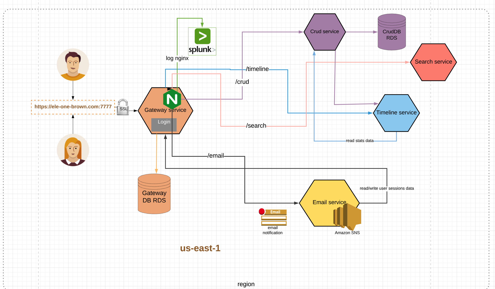
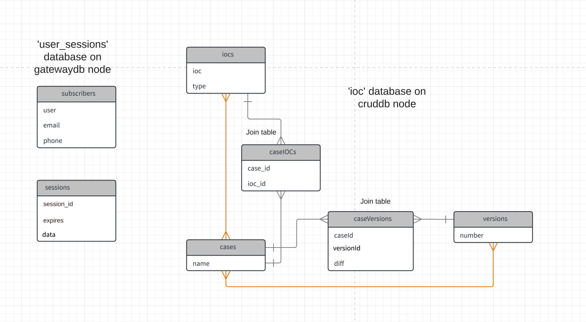
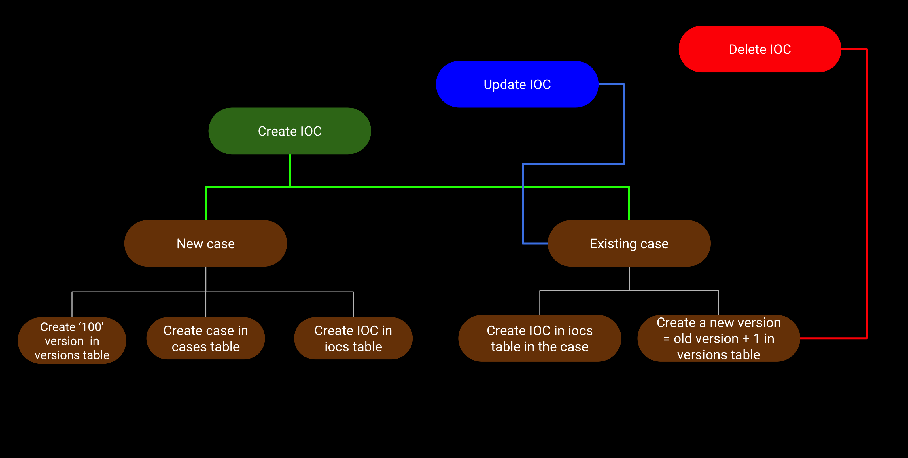
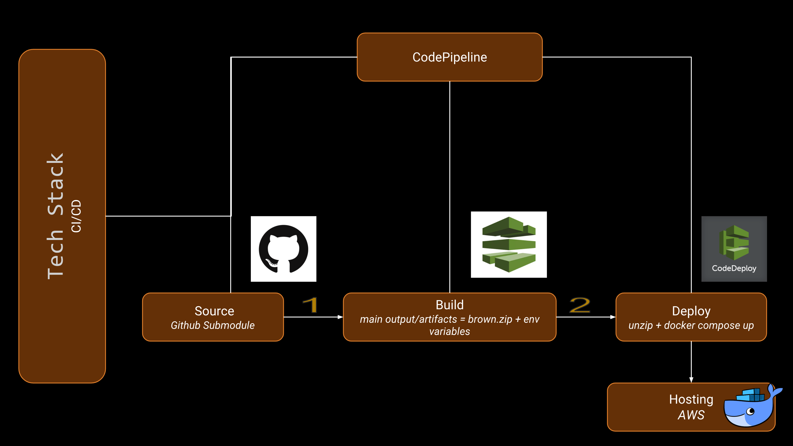
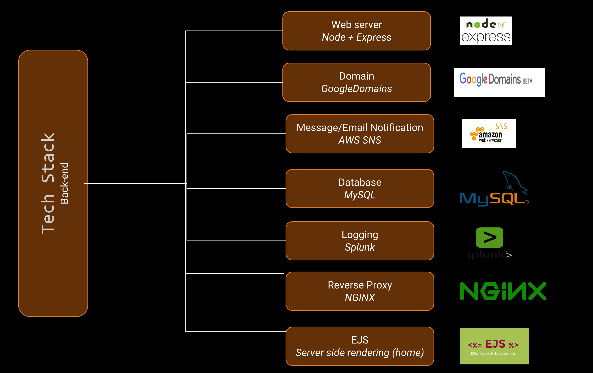
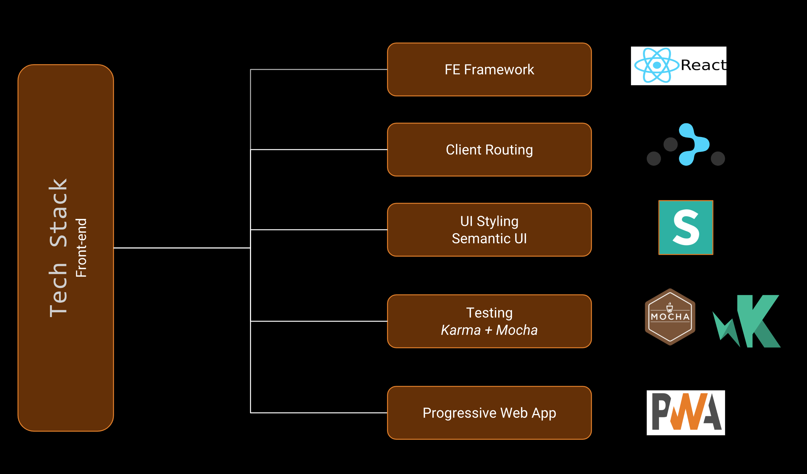

What is Brown?
Brown is an IOC (Indicator Of Compromise) management, versioning, analysis and search automation application system.
Highlights
- Uses Splunk for logging nginx access attempts
- Formulates a new way of versioning IOCs
- Able to search various versions within log files
- A 62% progressive web application
- Makes use nginx for reverse proxying
- Uses Splunk for nginx access logs
Microservice Architecture
It is a loosely coupled microservice architecture comprising of 4 services
- crud
- search
- timeline

Database Schema
- iocs <-many-to-many-> cases
- cases <-many-to-many-> versions

Versioning logic

Tech Stack
  
GitHub
https://github.com/ele-one/brown